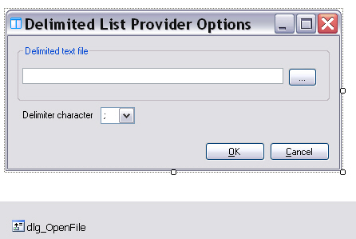

Implementing the Plug-in User Interface
The plug-in user interface must let users select the delimited list text file and specify the delimiter character at run time.
Add a form named ListProviderConfDialog to your project. This form is not part of the project template, and it should include the following controls:
- txt_ListFile: text box for entering the list file name and path.
- combo_Delimiter: combo box for selecting the delimiter character. Add the following items: ; : = \t.
- btn_Browse: button for opening the file selection dialog.
- dlg_OpenFile: dialog for selecting the list file. Leave the
FileNameproperty empty, and set theFilterproperty to List text files (.txt)|(.txt). - btn_Cancel: button for closing the form without applying changes.
- btn_OK: button for closing the form and applying changes.

Implement the User Interface Functionality
Use the following steps to implement the basic user interface behavior:
- Selecting the delimited text file: The
btn_Browsebutton should open the Open File dialog and place the selected file name intxt_ListFile:
private void btn_Browse_Click(object sender, EventArgs e)
{
this.dlg_OpenFile.ShowDialog();
string fileName = dlg_OpenFile.FileName;
if (fileName != "")
{
txt_ListFile.Text = fileName;
}
}
- Applying the settings: The
btn_OKbutton should close the form and apply the plug-in settings, including the text file name and path and the delimiter character.
private void bnt_OK_Click(object sender, EventArgs e)
{
Options.Delimiter = this.combo_delimiter.Text;
Options.ListFileName = this.txt_ListFile.Text;
}
Note
The form should also configure the plug-in settings. To do that, you must implement the separate ListTranslationOptions class, which the next chapter covers. See Storing and Retrieving the Plug-in Settings.